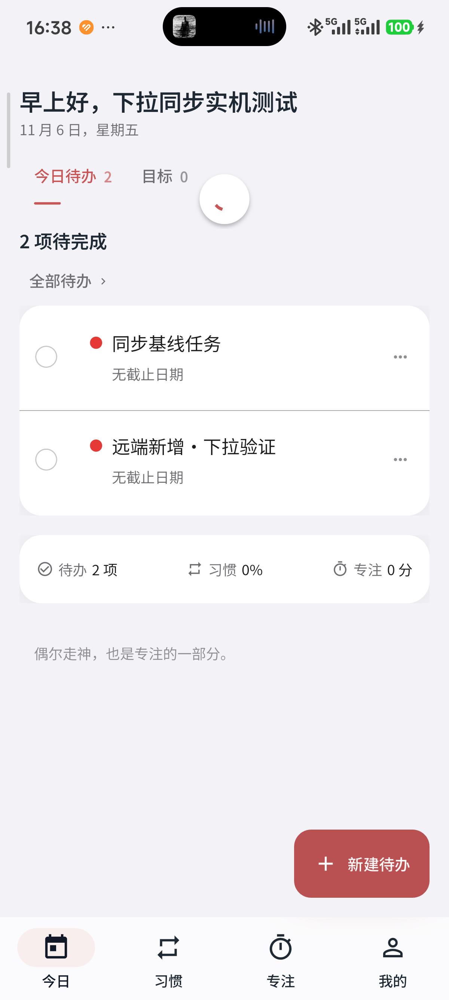
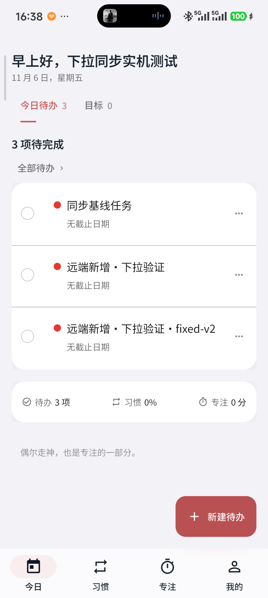
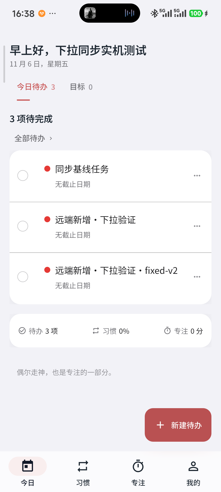
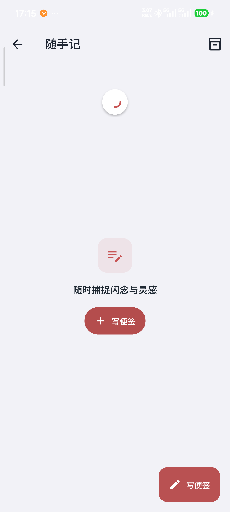
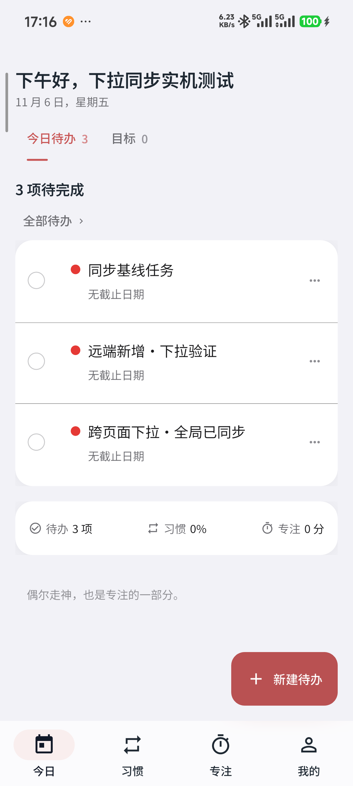

小米 24129PN74C · Android 16 · 1200×2670 · 字体倍率 1.25。修正版 APK：04a48f18…07df23a。同一 APK 分阶段覆盖今日、习惯、专注、我的、待办、日历、随手记、目标、倒数日，以及纯拉取、503 重试和误触过滤。以下均为 ADB 原始手机截图，本页仅展示证据。





真机发现的空快捷模板哈希差异已修复，106 项定向 Flutter 测试和静态分析通过。正式版 APK 与安装信息、手机显示设置保持不变。